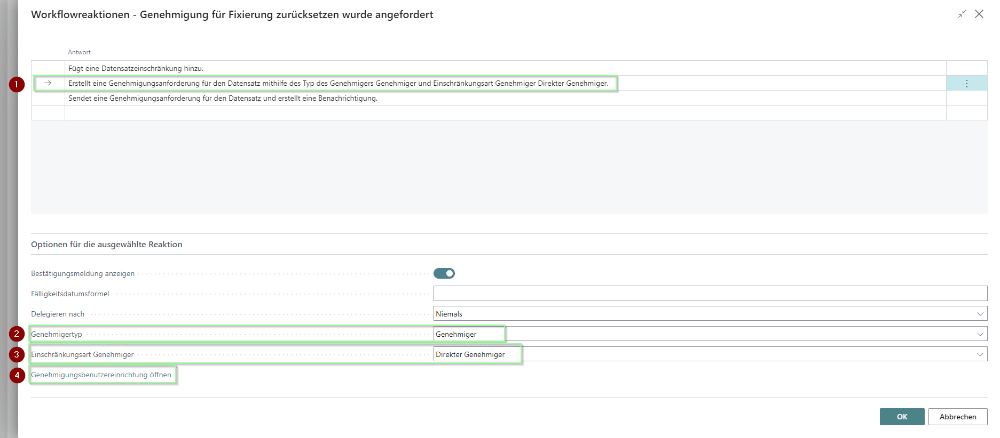
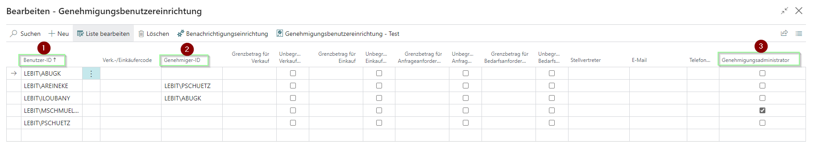

Funktionsbeschreibung
1. Zuordnung eines Kontingents in der Verkaufszeile
In der Verkaufszeile kann ein Kontingent ausgewählt werden. Es werden die Kontingente angezeigt, die auch der Sorte am Artikel entsprechen. Das Warenausgangsdatum wird automatisch auf das Enddatum des Kontingents gesetzt.
Sobald ein Kontingent in der Verkaufszeile ausgewählt und der Verkaufsauftrag gespeichert wird, wird in dem entsprechenden Kontingent die Anzahl in "Menge in Auftrag" ausgegeben und die verfügbare Restmenge angezeigt.
Wird ein Verkaufsauftrag freigegeben, wird die Menge aus der Verkaufszeile von "Menge in Auftrag" in "Freigegebene Menge" verschoben.
Wenn die Menge des Produkts in der Verkaufszeile die Menge des Kontingents übersteigt, aber nicht die erlaubte Überlastung, dann erscheint eine Warnmeldung. Der Verkaufsauftrag, der das Kontingent überlastet, kann nicht freigegeben werden. Andere Verkaufsaufträge können allerdings freigegeben werden, solange das Kontingent nicht überlastet wird.
2. Workflow
Um Kontingente zu steuern, ist es möglich, einen Genehmigungsworkflow zu aktivieren. Die Auswahl und Einrichtung des Workflows erfolgt über die Workflows mit der Auswahl einer Workflowvorlage.

- Nun klickt man auf die zweite Antwort, damit sich die unteren Optionen öffnen.
- Der Genehmigertyp wird auf Genehmiger gestellt.
- Die Einschränkungsart Genehmiger wird auf Direkter Genehmiger gestellt.
- Die Aktion Genehmigungsbenutzereinrichtungen öffnen, damit für die einzelnen Benutzer Einrichtungen getroffen werden können.

- Die Benutzer-ID gibt den Benutzer an, der das Kontingent zurücksetzen will.
- Die Genehmiger-ID gibt den Benutzer an, der die Genehmigung für das Zurücksetzen der Kontingente erteilt.
- Es kann ein Genehmigungsadministrator gewählt werden, der als einziger keinen Genehmiger braucht.
Nachdem die Einrichtungen vorgenommen worden sind, kann die Maske geschlossen werden und die Workflowreaktion mit dem Button OK abgeschlossen werden.
Der Workflow kann nun aktiviert werden.
Wenn der Workflow aktiviert ist, lässt sich ein Kontingent freigeben, aber um den Status zurückzusetzen, um Veränderungen vorzunehmen, braucht man die Genehmigung des Genehmigers.
Wenn man eine Genehmigungsanforderung gesendet hat, erhält man eine Bestätigung, dass die Anfrage gesendet wurde.